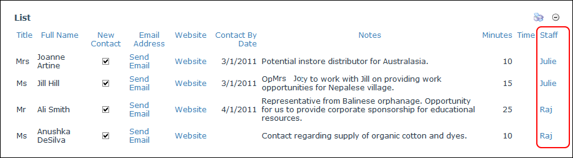

Advanced User Profile Link Column Options
userHow to configure the optional Advanced Column Options for Link To User's Profile columns for a form or list in the Form & List module. This tutorial assumes you are currently adding or editing a User Profile Link column. See "Creating a List", "Creating a Form" or "Editing List or Form Columns"
- Go to the Advanced Column Options section and set any of the following optional fields:
- At List of Values set the following:
- In the List of Values text box, enter one or more usernames separated by a semi-colon ( ; ). E.g. Admin;Jack:Julie;. Where a non-existent username is entered it will not be displayed as an option. Leave this field blank to display a text box into which any username can be entered.
- Select how the list options are displayed:
- Drop Down List: Display values in a drop down selection list. This is useful when you have a lot of values.
- Radio Button List (Vertical): Display values in a vertical list with radio buttons.
- RBL (Horizontal): Display values in a horizontal list with radio buttons.
- In the Caption Options text box, enter the text to be displayed as the link for this user on the UDT. HTML formatting is permitted. Leave this field blank to display the user's name. Tip: Click the Available Tokens Help link for more.
- At Show User's Username Instead of his Displayname, to display username - OR - to display the user's display name.
- In the Default Value text box, enter the default value for this field. When creating a new row this value will automatically be selected or entered.
- In the Help Text text box, enter a help message to assist users when they add and manage data for this column.
See "Settings for User Profile Links" to configure additional settings for this column type.

Setting the Advanced Options for a User Profile Link column

The User Profile field displayed in a List